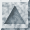
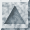

The Boston Housing DatasetA Dataset
derived from information collected by the U.S. Census Service concerning housing
in the area of Boston Mass.  
|
|
This dataset contains information collected by the U.S Census Service
concerning housing in the area of Boston Mass. It was obtained from the StatLib
archive (http://lib.stat.cmu.edu/datasets/boston),
and has been used extensively throughout the literature to benchmark algorithms.
However, these comparisons were primarily done outside of Delve and are
thus somewhat suspect. The dataset is small in size with only 506 cases.
The data was originally published by Harrison, D. and Rubinfeld, D.L. `Hedonic
prices and the demand for clean air', J. Environ. Economics &
Management, vol.5, 81-102, 1978.
Dataset Naming
The name for this dataset is simply boston. It has two prototasks:
nox, in which the nitrous oxide level is to be predicted; and price,
in which the median value of a home is to be predicted
Miscellaneous Details
- Origin
- The origin of the boston housing data is Natural.
- Usage
- This dataset may be used for Assessment.
- Number
of Cases
- The dataset contains a total of 506 cases.
- Order
- The order of the cases is mysterious.
- Variables
- There are 14 attributes in each case of the dataset. They are:
- CRIM - per capita crime rate by town
- ZN - proportion of residential land zoned for lots over 25,000 sq.ft.
- INDUS - proportion of non-retail business acres per town.
- CHAS - Charles River dummy variable (1 if tract bounds river; 0 otherwise)
- NOX - nitric oxides concentration (parts per 10 million)
- RM - average number of rooms per dwelling
- AGE - proportion of owner-occupied units built prior to 1940
- DIS - weighted distances to five Boston employment centres
- RAD - index of accessibility to radial highways
- TAX - full-value property-tax rate per $10,000
- PTRATIO - pupil-teacher ratio by town
- B - 1000(Bk - 0.63)^2 where Bk is the proportion of blacks by town
- LSTAT - % lower status of the population
- MEDV - Median value of owner-occupied homes in $1000's
- Note
- Variable #14 seems to be censored at 50.00 (corresponding to a median price
of $50,000); Censoring is suggested by the fact that the highest median price of
exactly $50,000 is reported in 16 cases, while 15 cases have prices between
$40,000 and $50,000, with prices rounded to the nearest hundred. Harrison and
Rubinfeld do not mention any censoring.